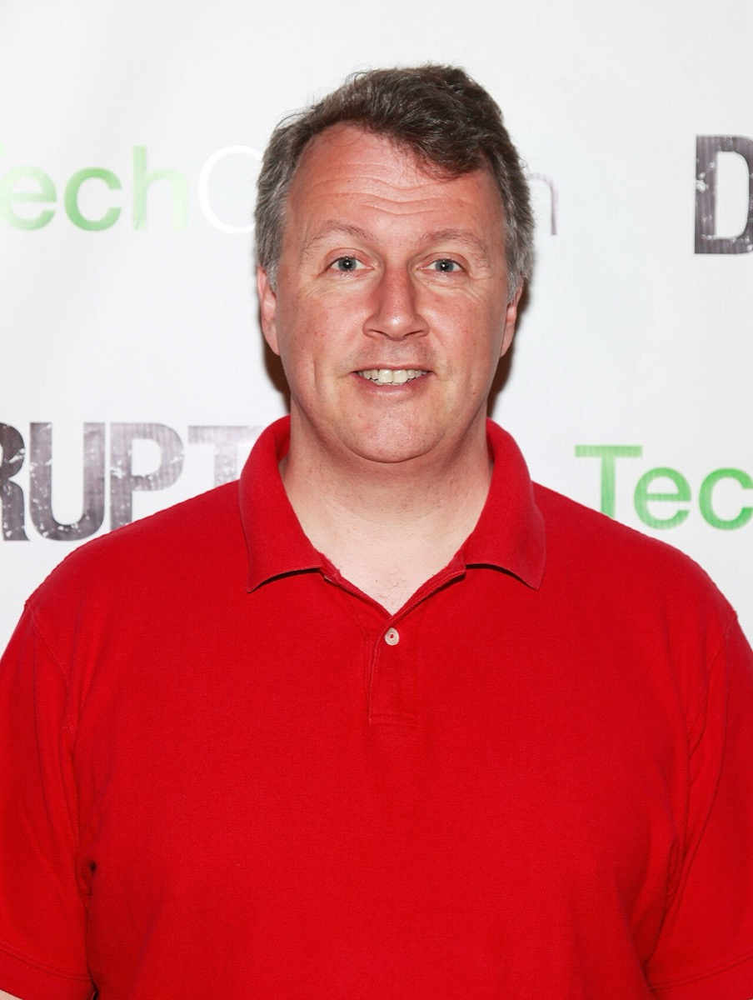
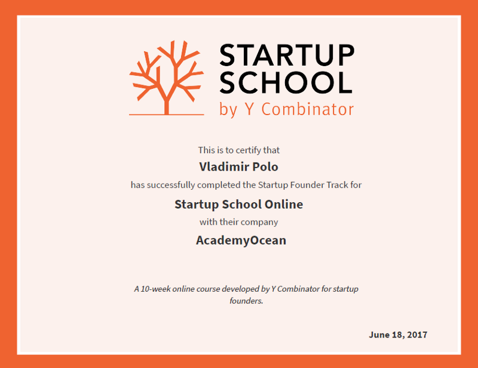
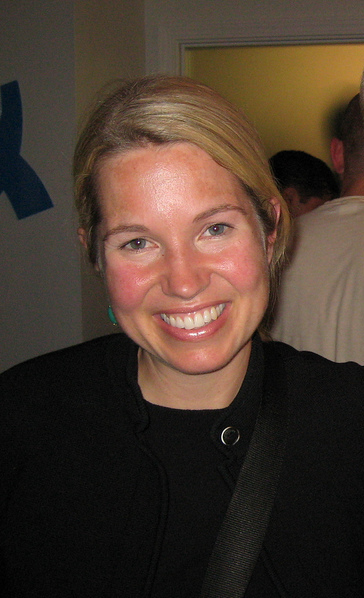
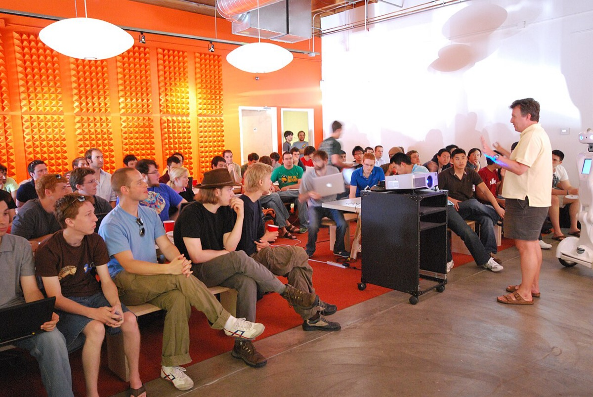
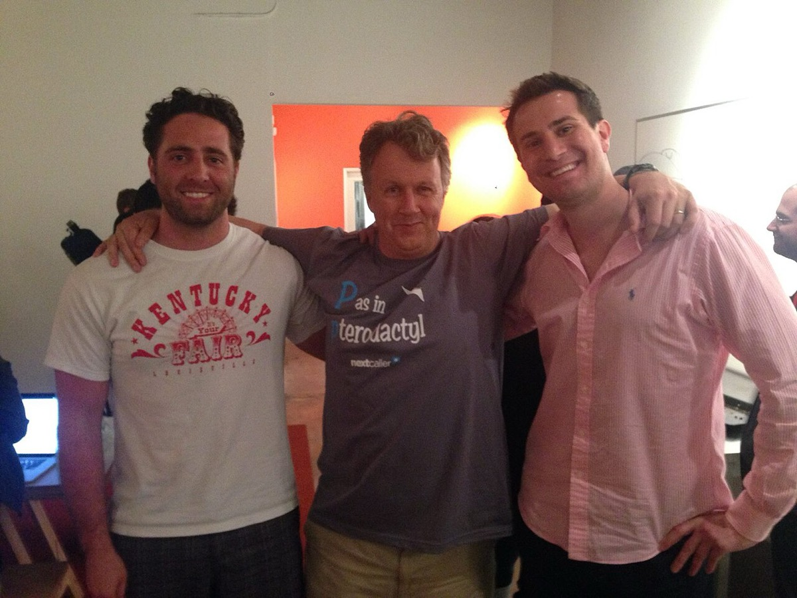
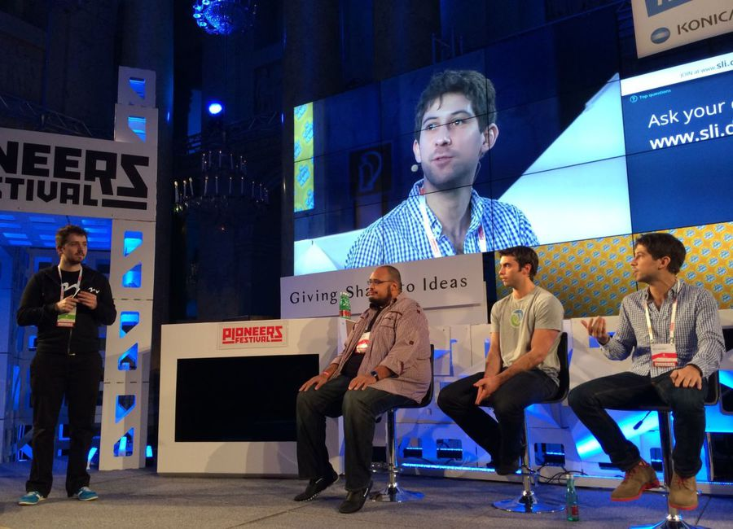

home / people / ポール・グレアム
ポール・グレアム — Viaweb から Y Combinator まで
Paul Graham 1964.11.13 – ／エッセイスト・投資家、Y Combinator 共同創業者
エッセイ年次 バッチ規模 Series A
Y Combinator Viaweb 打率
判断は二つである。第一に、エッセイ公開頻度の低下区間で応募の代理指標（バッチ規模）の成長は鈍るか。第二に、バッチを約100社超へ拡大したあと Series A or later 到達率は下がったか。
改稿日 2026年11月11日（査読の写真指摘を反映。初稿 2026年9月26日）。応募数の年次公式表は非開示のため、主張1はエッセイ年次本数とバッチ規模の代理比較で検証する。Series A 率は Funding Watcher の二次集計（single-source）。年表の満年齢は 1964-11-13 からの年差。
① 概要Overview
W16 Series A+
31.1%122社・二次
W20 Series A+
22.3%229社・二次

2011年5月25日、ニューヨークの TechCrunch Disrupt に出席した Paul Graham。主張1・2が扱う本人（エッセイ公開と YC 運営の当事者）である。写真：TechCrunch ／CC BY 2.0／Wikimedia Commons
先に結論を置く。
1. 「エッセイ更新が減ると流入も鈍る」は棄却。 エッセイ年次本数は 2009年21本がピークである。2011年は3本、2014年は6本、CSV上の2015年は2本まで減る。同じ期間のバッチ規模は S05=8 から W12=66、W15=110 へ増え続ける。2016–17年も本数は各4本・3本と低いが、W19=194、W22=398 まで拡大した。応募の年次公式表と広告費の比較は取れない。設立時の募集文が講演／エッセイ経路である事実は一次で残るが、超過応募の主因をエッセイ頻度だけで説明するモデルは代理系列と合わない52 48 5 26
2. バッチ拡大のあと Series A or later は下がった（相関。二次・single-source）。 Funding Watcher では W16（122社）31.1%、W19（194社）23.7%、W20（229社）22.3%。因果（接触時間のみ）までは示さない。読む単位はファンド規模ではなくバッチ当たりの到達率である48
主張
読者と判断： シード／アクセラレータへの出資や応募を検討する人が、「エッセイブランドの流量」と「バッチ規模に対する Series A 到達」のどちらを採否の主変数にするかを決める材料を得る。
主張： 主要エッセイの年次本数がピークから低下した区間で、応募の代理指標であるバッチ規模の成長も鈍る。 反証条件： エッセイ本数が明確に低い年の前後でも、バッチ規模が継続して拡大している場合。 判定： 棄却（2009年21本→2011年3本・2014年6本でもバッチは拡大。2016–17年の低本数区間でも W19–W22 へ拡大。応募一次系列と広告費比較は非開示／欠落）主張： バッチ規模が約100社超へ拡大したあと Series A or later 到達率は上がらず下がる。W16=31.1%、W19=23.7%、W20=22.3% である。 反証条件： 年齢を揃えた一次表で、大規模バッチの Series A 到達率が小規模成熟バッチを上回る場合。 判定： 支持（Funding Watcher 二次集計・single-source の相関。因果は示さない。市況の交絡あり。年齢補正の一次表が公開されれば再判定する）
分解： 物理的制約はバッチ期間（約3か月）とパートナーの面談時間である。お金の流れは標準チケット（現行 $500k（約6,600万円）のうち $125k（約1,600万円）が7%）とキャリーである。利得の帰属は合格創業者・不合格者・後続VC・YC 本体に分かれる。法と強制力は持分契約（SAFE）とデモデー後の情報非対称である。時間はエッセイ公開の年次と、デモデーから Series A までの経過年である。
② 年表Timeline 主張1・2の検証に必要な日付に絞った。日付の右は満年齢（1964-11-13）である。
該当する項目がない。
③ 主張1の検証 — エッセイ年次とバッチ規模Essay Cadence vs Batch Size


左は Y Combinator Startup School の修了証（AcademyOcean へ交付）。講演・教材経路の実物文書である。右は共同創業者 Jessica Livingston（2007年）。初期バッチの面接・選抜を担った当事者であり、バッチ規模（合格社数）の形成に関与する。エッセイ本文の年次本数は下表の CSV／本人ページ抽出で数え、図解や代理図は使わない。写真：Y Combinator Startup School ／CC0；Gabor Cselle ／CC BY 2.0／Wikimedia Commons
設立時点の経路は一次文で固定できる。2005年3月、Graham は "How to Start a Startup" のあと「guilty」と感じ、Summer Founders Program を発表した。有料広告での初回募集を示す一次記録は、本ページの範囲では無い5 19
In How to Start a Startup, I said there could be ten times more startups than there are.... afterwards I felt guilty. So I've figured out a solution to the problem.
Paul Graham、2005年3月・Summer Founders Program5
監査が求めたのは、その後の応募成長率 とエッセイ更新の連動である。応募の年次公式表は非開示のため、公開できる系列は (a) エッセイ年次本数と (b) バッチ規模である。後者は合格社数であり応募そのものではない。合格率が大きく変わらない限り流入の下限側の代理になる、という前提を明示する。
エッセイ年次本数（代表年）
2005–2015 は clean_essays.csv。2016 以降は本人ページ先頭の Month Year を抽出（推定・不完全の可能性）
バッチ規模（同一時期の代理系列）
単位は社/バッチ。エッセイ本数が低い年でも規模は拡大している
S22 公式は応募約19,000件・採択240社と書く。これは単年スナップショットであり、エッセイ本数6本（2022年抽出）との因果には使えない。広告費との比較系列も無い49
判定：主張1は棄却 。エッセイ本数の低下区間でもバッチ規模は拡大した。設立時の経路説明は一次で残るが、「更新停止後に応募成長が鈍る」という時系列仮説は代理系列と一致しない。
④ 主張2の検証 — バッチ拡大と Series ABatch Scale vs Series A

YC Summer 2009 の Prototype Day で話す Paul Graham（2009-06-24）。小規模バッチ期の、バッチ内発表とパートナー接触の場面である。主張2が測る到達率の前提は、この種の接触時間が社数で割られることである。写真：Kevin Hale ／CC BY-SA 2.0／Wikimedia Commons


左は 2014年3月、Y Combinator で Paul Graham と創業者 Ian Roncoroni・Gianni Martire。社長交代（2014-02-21）直後の、本人とバッチ創業者の接触場面である。右は Pioneers Festival（Vienna）で登壇する創業者 Tikhon Bernstam と、YC パートナーの Michael Seibel・Aaron Iba。拡大後の接触はパートナー複数による分担へ移る。写真：Geosocial ／CC BY-SA 4.0；Michael herr ／CC BY-SA 4.0／Wikimedia Commons
YC 公式 "Scaling YC" は次のように書く。初回8社から100社超まで約20バッチである。その後さらに拡大し、仮想バッチで300社超へ至った。S20 の office hours は合計3,600時間。S22 はパートナー18人・小グループ33・採択240社である26 50 49
2014年2月21日、Graham は社長を Sam Altman に譲り、「YC を大きくする役に自分は最適でない」と書いた。バッチ拡大の運営責任が本人から外れる日付である12
Series A or later 到達率（二次集計）
Funding Watcher。W16→W20 で規模拡大と到達率低下が同時に見える。因果ではない
判定：主張2は支持 （二次集計・single-source の相関）。観察は「規模拡大と Series A or later 低下の同時進行」である。パートナー接触時間を唯一の原因とする主張までは、この表だけでは届かない。年齢補正の一次表が公開された場合は再判定する。
⑤ 限界と欠落Limits Viaweb 売却後の Yahoo! Store 単体損益は N/A である。YC の監査済み失敗率（解散・損切りの定義付き）も非開示である。Broe のユニコーン約4.5%は二次分析（single-source・推定）の到達率であり、公式失敗率の代替にはしない。Arc（2008年公開）と Hacker News の普及度は、主張1・2の判定系列には入れない11 38 35
欠落データ。 応募数の年次公式表。広告費・流入チャネル別の内訳。SimilarWeb 等の paulgraham.com 流入の監査可能な一次。年齢補正済みの Series A 一次表。
⑥ 語録Quotes 主張の検証に直結する発言に限る。
⑦ 金額を日本円で読むAmounts in Yen 1998年のドル建ての金額は、FRED の1998年の年平均レート1ドル=131.0円で円にした56 57 58 59 60
換算の出典：FRED AEXJPUS56 57 58 59 60
⑧ 誰が得をするか / 残っている問い / 出典Winners / Open Questions / Sources 誰が得をするか
合格創業者は標準チケット（現行は合計 $500k（約6,600万円）のうち $125k（約1,600万円）が7%）とデモデー後の投資家リストを得る。不合格者は応募コストを負担する。後続 VC は選抜済みパイプラインを得る。YC 本体は持分と、バッチ拡大による固定費の分散を得る。Graham は 2014年以降、拡大運営の責任からは外れ、文章側の出力を続ける位置に移る9 12
残っている問い
応募数の年次公式表が公開された場合、エッセイ本数ではなく検索流入（paulgraham.com）と応募は連動するか。
パートナー1人あたり接触時間（時間／社）を揃えた一次表で、Series A 到達の閾値はどこか。
2021–22年の資金環境を除いた年齢補正で、W21 以降の Series A or later は W16 水準に戻るか。
出典
Paul Graham「Bio」 — https://paulgraham.com/bio.html
Yahoo! プレスリリース（1998-06-08）キャッシュ — https://web.cs.wpi.edu/~cs1102/a16/Assignments/Hwk5/cached/Viaweb.html
NYT / Reuters「Yahoo Buying Viaweb」（1998-06-09） — https://www.nytimes.com/1998/06/09/business/company-news-yahoo-buying-viaweb-a-web-marketing-software-maker.html
YC Blog「Paul Graham on Doing Things Right by Accident」 — https://www.ycombinator.com/blog/paul-graham-startup-school-radio-interview/
Paul Graham「Summer Founders Program」（2005-03） — https://paulgraham.com/summerfounder.html
YC Blog「Jessica Livingston Shares 9 Things…」 — https://www.ycombinator.com/blog/jessica-livingston-shares-9-things-she-learned-from-founding-yc/
WIRED「Stars Rise at Startup Summer Camp」（2005-09） — https://www.wired.com/2005/09/stars-rise-at-startup-summer-camp/
YC Blog「The New Deal」 — https://www.ycombinator.com/blog/the-new-deal/
YC Blog「YC's $500,000 Standard Deal」（2022-01-11） — https://www.ycombinator.com/blog/ycs-500-000-standard-deal
Dealroom「YC batch index」 — https://dealroom.co/yc-batches/
Palle Broe「Pulling back the curtain…」（as of 2024-12-10） — https://palle.substack.com/p/pulling-back-the-curtain-on-the-magic
YC Blog「Sam Altman for President」（2014-02-21） — https://www.ycombinator.com/blog/sam-altman-for-president
Wikipedia「Paul Graham (programmer)」 — https://en.wikipedia.org/wiki/Paul_Graham_(programmer)
Paul Graham「What I Worked On」（2021） — https://paulgraham.com/worked.html
Paul Graham「Beating the Averages」（2001） — https://paulgraham.com/avg.html
SEC Yahoo! 提出物（Viaweb 1998-06-10） — https://www.sec.gov/Archives/edgar/data/1011006/000104746999001705/0001047469-99-001705.txt
Paul Graham「A Plan for Spam」 — https://paulgraham.com/spam.html
Paul Graham「Hackers and Painters」 — https://paulgraham.com/hp.html
Paul Graham「How to Start a Startup」（2005-03） — https://paulgraham.com/start.html
Paul Graham「Maker's Schedule, Manager's Schedule」 — https://paulgraham.com/makerschedule.html
Paul Graham「Keep Your Identity Small」 — https://paulgraham.com/identity.html
Paul Graham「Do Things that Don't Scale」（2013-07） — https://paulgraham.com/ds.html
Paul Graham「How to Do Great Work」（2023） — https://paulgraham.com/greatwork.html
Paul Graham「Founder Mode」（2024-09） — https://paulgraham.com/foundermode.html
TechCrunch「How Does Y Combinator Scale…」（2012-04-02。W12=66） — https://techcrunch.com/2012/04/02/yc-y-combinator-scaling/
YC Blog「Scaling YC」 — https://www.ycombinator.com/blog/scaling-yc
Paul Graham「How Y Combinator Started」 — https://paulgraham.com/ycstart.html
YC FAQ（Wayback 2007-02-25） — https://web.archive.org/web/20070225164455/ycombinator.com/faq.html
YC 会社ディレクトリ — https://www.ycombinator.com/companies
本サイト既存レポートとの突合 — 011_company
YC Blog「New Standard Deal」 — https://www.ycombinator.com/blog/new-standard-deal
YC Blog「A New Standard Deal」（2020-06-26） — https://www.ycombinator.com/blog/a-new-standard-deal
TechCrunch「Paul Graham claims Sam Altman wasn't fired…」（2024-05-30） — https://techcrunch.com/2024/05/30/paul-graham-claims-altman-wasnt-fired-from-y-combinator/
Paul Graham「Bel」 — https://paulgraham.com/bel.html
Paul Graham「Arc's Out」（2008-01-29） — https://paulgraham.com/arc0.html
Paul Graham「What I've Learned from Hacker News」 — https://paulgraham.com/hackernews.html
Wikipedia「Hacker News」 — https://en.wikipedia.org/wiki/Hacker_News
EcommerceBytes「Yahoo Stores Gets New Name…」（2015-08-03） — https://www.ecommercebytes.com/2015/08/03/yahoo-stores-gets-new-name-user-agreement-advance-spinoff/
EcommerceBytes「Yahoo Stores Gets Its Name Back…」（2017-09-04） — https://www.ecommercebytes.com/2017/09/04/yahoo-stores-gets-name-back-dizzying-ride/
Paul Graham「What Happened to Yahoo」 — https://paulgraham.com/yahoo.html
Arc Forum 議論（二次） — http://arclanguage.org/item?id=21062
Paul Graham「What I Didn't Say」（2013-12） — https://paulgraham.com/wids.html
TechCrunch「Paul Graham Responds To Critics…」（2013-12-30） — https://techcrunch.com/2013/12/30/paul-graham-responds-to-critics/
Fast Company「How, and Why, Y Combinator Got Serious About Diversity」 — https://www.fastcompany.com/3042308/how-and-why-y-combinator-got-serious-about-diversity/
NYT DealBook「Founder Mode」（2024-09-03） — https://www.nytimes.com/2024/09/03/business/dealbook/founder-mode-chesky-graham.html
Observer「Brian Chesky… Founder Mode」 — https://observer.com/2024/09/airbnbs-brian-chesky-defends-founder-mode-criticisms/
YC「The Y Combinator Deal」 — https://www.ycombinator.com/deal
Funding Watcher「by-batch.csv」（Series A or later / 社数。二次） — https://fundingwatcher.com/static/data/yc-series-a-within-a-year/by-batch.csv
YC Blog「Meet the YC Summer 2022 Batch」（2022-09-07。応募19,000・240社・18 partners） — https://www.ycombinator.com/blog/meet-the-yc-summer-2022-batch
YC Blog「2020 — Year in Review」（office hours 3,600） — https://www.ycombinator.com/blog/2020-year-in-review
CNN Money「Yahoo to buy Viaweb」（1998-06-08） — https://money.cnn.com/1998/06/08/technology/yahoo/
avyfain/pg-essays「clean_essays.csv」（エッセイ日付の二次整理。2001–2015） — https://github.com/avyfain/pg-essays/blob/master/clean_essays.csv
YC Atlas「Timeline」（バッチ社数の二次照合） — https://ycatlas.anirudhvee.com/timeline
Paul Graham 各エッセイページ先頭の Month Year（2016年以降の本数抽出。推定・不完全の可能性） — https://paulgraham.com/articles.html
SEC EDGAR Yahoo! 提出物（Viaweb クローズ 1998-06-10、購入価格約 $48.6M） — https://www.sec.gov/Archives/edgar/data/1011006/000091205799005431/0000912057-99-005431-d2.html
FRED「Japanese Yen to U.S. Dollar Spot Exchange Rate」AEXJPUS — https://fred.stlouisfed.org/series/AEXJPUS
総務省統計局 消費者物価指数 2024年年報 第17表 戦前基準5大費目指数（東京都区部） — https://www.e-stat.go.jp/stat-search/file-download?statInfId=000040263662&fileKind=0
総務省統計局 2025年基準消費者物価指数 第14表 戦前基準5大費目指数（東京都区部） — https://www.e-stat.go.jp/stat-search/file-download?statInfId=000040501471&fileKind=0
厚生労働省『平成27年版 労働経済の分析』主要労働統計表 第11表 新規学卒者の初任給 — https://www.mhlw.go.jp/wp/hakusyo/roudou/15/dl/15-1-10.pdf
厚生労働省 令和7年賃金構造基本統計調査 第10表 — https://www.mhlw.go.jp/toukei/itiran/roudou/chingin/kouzou/z2025/dl/10.pdf